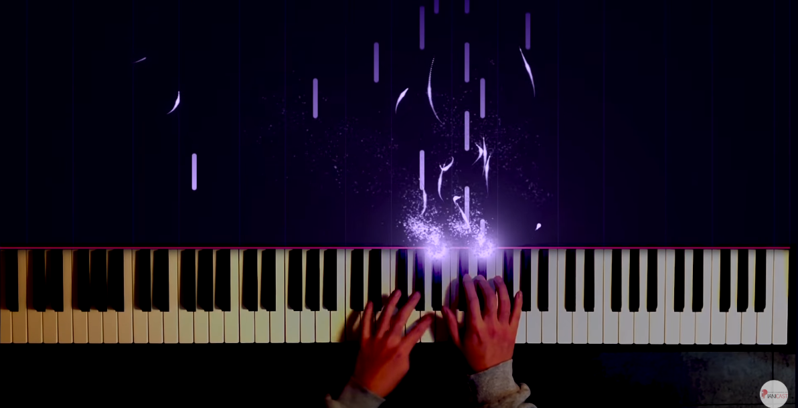

-
Best Cover Video
1.6개 국어ver. 뜨거운안녕 (Feat.스텔라장)
2.플라워 댄스(Flower Dance) - DJ Okawari | 피아노 커버
3.혜민쌤의 스트럼스타일 홍민정의 [아마도 그건(과속스캔들OST)]
- 
- 1
- 2
- 3
- 4
1.6개 국어ver. 뜨거운안녕 (Feat.스텔라장)
2.플라워 댄스(Flower Dance) - DJ Okawari | 피아노 커버
3.혜민쌤의 스트럼스타일 홍민정의 [아마도 그건(과속스캔들OST)]